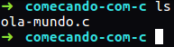
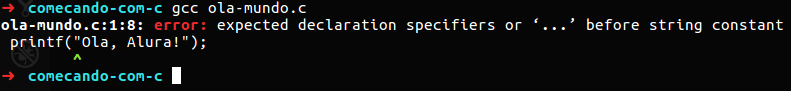
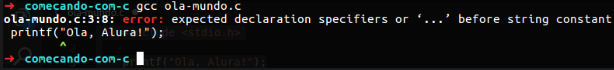

Começando a programar com C

Quando vamos começar a estudar programação, nos deparamos com diversas linguagens de programação. Qual
delas devemos aprender primeiro?
Independente da linguagem de programação, todas elas têm ao menos uma coisa em comum: a lógica. Não
importa a linguagem que escolhemos para começar, a lógica executada será a mesma. Claro, talvez os
passos para realizar essas tarefas sejam diferentes, pois cada linguagem tem uma sintaxe diferente.
Em meio tantas linguagens de programação, uma muito popular é a linguagem C.
A linguagem C é uma das linguagens mais utilizadas nos dias de hoje, e serviu como base para diversas
outras linguagens, como C++, C#, Java, PHP, Javascript, entre algumas outras. Mas como podemos escrever
um programa em C?
Olá, mundo! E algumas coisas a mais
Temos que começar a escrever nosso código que será o nosso programa em C. Para isso, podemos utilizar qualquer editor de textos. Precisamos falar para o computador que esse é um arquivo da linguagem C, para isso, colocamos a extensão .c:
Temos o arquivo criado, agora o que colocamos nele? Que comandos passamos para o computador começar a
executar ações?
Vamos falar para o C imprimir (printf) uma mensagem para a gente no vídeo:
Demos nossa instrução para o C. Falamos para ele imprimir um texto. O C pede que todo texto, também
chamado de string, deve estar entre aspas duplas e toda instrução deve terminar com ponto e vírgula.
Esse código que escrevemos em C é um código legível por seres humanos. Isto é, uma pessoa consegue ler
esse código sem muitos problemas. Contudo, o computador não entende essa linguagem.
Temos que transformar essa linguagem que nós escrevemos para uma linguagem que o computador consiga
entender. Esse processo de transformação de um código de uma linguagem de programação em código de
máquina é chamado de compilação.
Quando compilamos um código, o compilador pega nosso código, neste caso escrito em C, e transforma para
uma linguagem que a máquina entenda. Existem alguns compiladores disponíveis, como estou utilizando um
Linux, vou utilizar o GCC, que já vem por padrão na maioria das distribuições.
gcc ola-mundo.c

Não conseguimos compilar o código. O GCC retornou um erro quando tentamos. Por que isso aconteceu?
Nós pedimos para o C escrever um texto na tela, mas onde falamos para ele onde está essa instrução
printf?
Nós queremos falar para o C usar uma instrução que realiza a saída dos dados. Isto é, mostrar uma
mensagem na tela. Então precisamos mostrar pra ele de qual lugar essa função está vindo, isto é, de qual
biblioteca ela vem.
No caso, a função printf vem da biblioteca padrão de entrada e saída de dados, a stdio.h. Para utilizar,
basta pedir para o C incluí-la (include) no nosso arquivo:
Bacana, se tentarmos compilar nosso programa veremos o mesmo erro:
Mas incluímos a biblioteca que tem a função printf, então por que esse erro continua?
Todo programa em C quando vai ser executado, precisa de uma função principal (main). Essa função indica
qual o ponto de entrada no programa. Como queremos que o nosso printf apareça quando o programa rodar,
precisamos declará-lo dentro da função main. Mas como declaramos essa função?
Para saber main sobre a Função Main clique aqui Função principal.